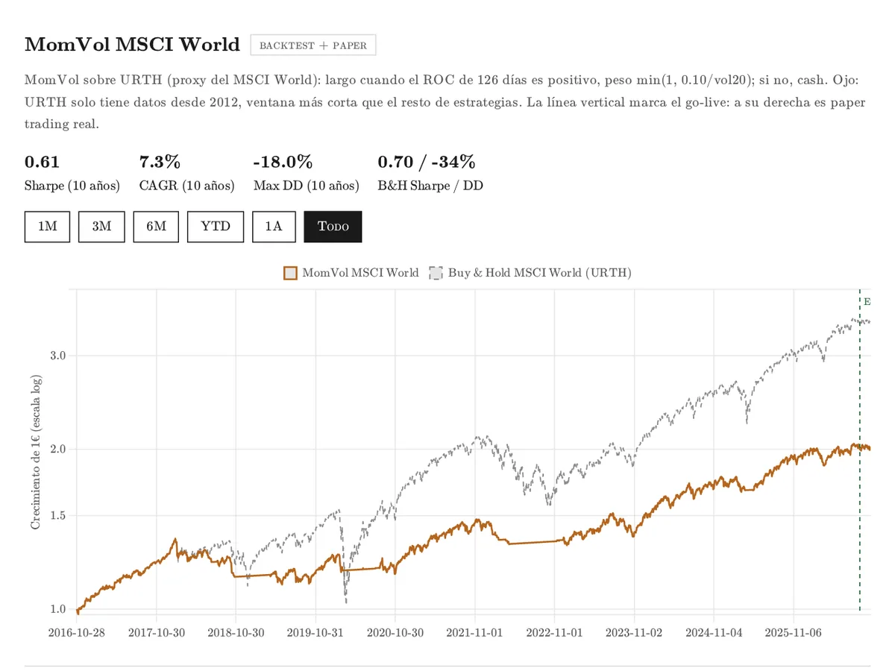
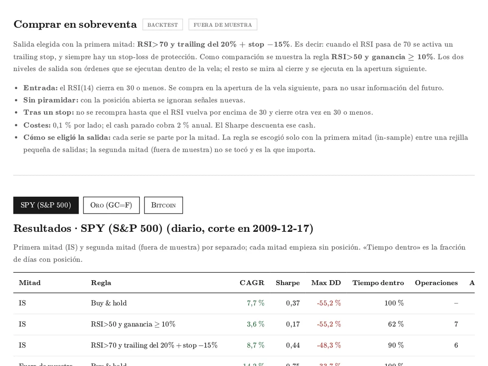
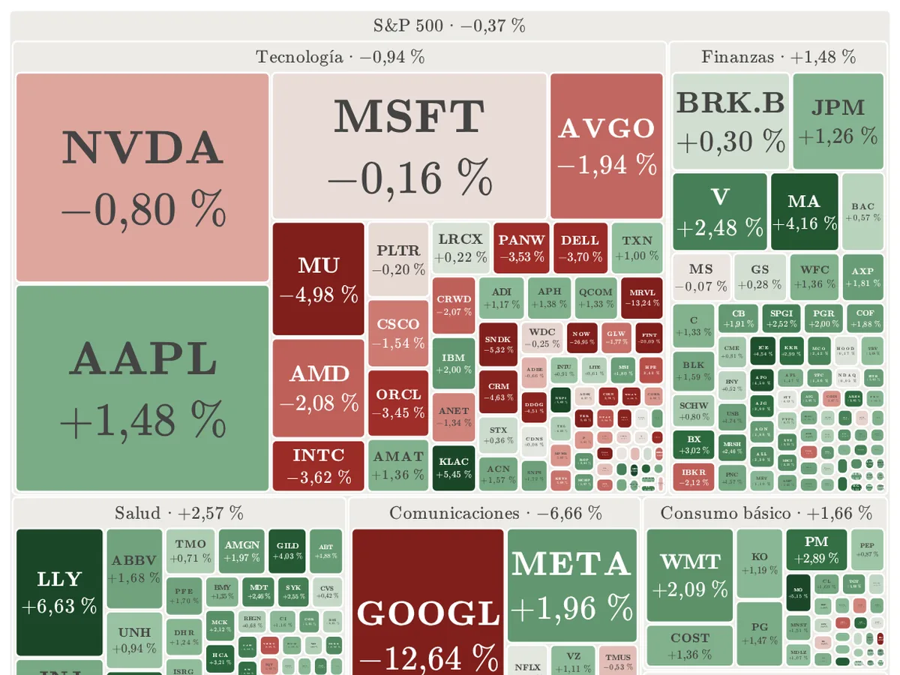

Sharpe Lab
Estrategias cuantitativas · backtests con costes
Paper trading en vivo
Paper trading en vivo
Cada estrategia que estudio, probada con costes y seguida en vivo. Además, un optimizador de carteras y algunas calculadoras.
1.Estrategias
 Bitcoin paper en vivoPaper trading con señales reales cada noche.Abrir →
Bitcoin paper en vivoPaper trading con señales reales cada noche.Abrir → Semis paper en vivoLos dos chips con más impulso, con la volatilidad a raya.Abrir →
Semis paper en vivoLos dos chips con más impulso, con la volatilidad a raya.Abrir → Mag7 paper en vivoOnce activos y una regla semanal.Abrir →
Mag7 paper en vivoOnce activos y una regla semanal.Abrir →
MSCI World paper en vivoMomVol sobre el MSCI World (proxy URTH): largo con ROC de 126 días positivo; si no, cash.Abrir →
RSI 30 backtest fuera de muestraCompra cuando el RSI(14) cierra en 30 o menos, sobre SPY, oro y Bitcoin.Abrir →2.En seguimiento
Dinero ficticio siguiendo las señales que genera el motor cada noche desde el go-live.
Comprobando la fecha de los datos…
| Estrategia | Universo | Go-live |
|---|---|---|
| ROC60 y Donchian20 | BTC-USD | 7 sep 2026 |
| SMA200W+RSI semanal | Mag7: 11 activos | 8 sep 2026 |
| Rotación Semis | NVDA, AVGO, AMD, TSM y ASML | 9 sep 2026 |
| MomVol MSCI World | URTH | 10 sep 2026 |
3.Herramientas

Market Screen se actualiza soloEl S&P 500 de un vistazo: mapa por sectores, rentabilidades y los que más suben y bajan.Abrir → Optimizador CVaRLa mezcla menos arriesgada para la rentabilidad que buscas.Abrir →
Optimizador CVaRLa mezcla menos arriesgada para la rentabilidad que buscas.Abrir → Interés compuestoIntereses que generan intereses.Abrir →
Interés compuestoIntereses que generan intereses.Abrir → Deudas BTCZonas que el precio aún no ha cruzado.Abrir →
Deudas BTCZonas que el precio aún no ha cruzado.Abrir →Otro proyecto: Small Cap Radar